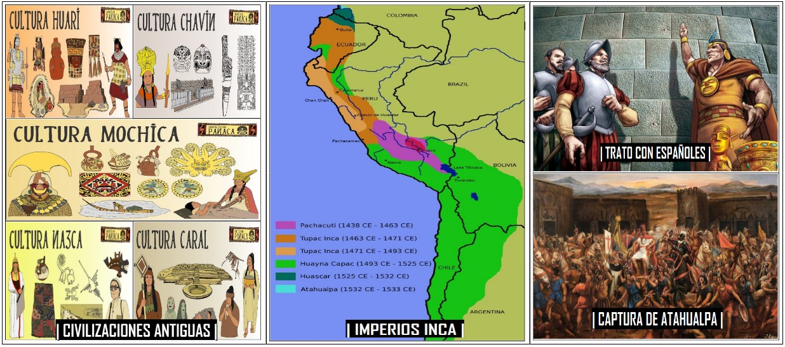
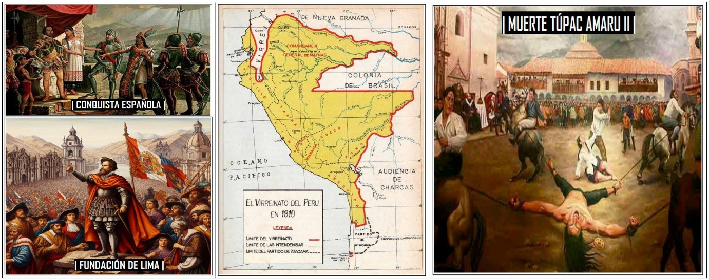
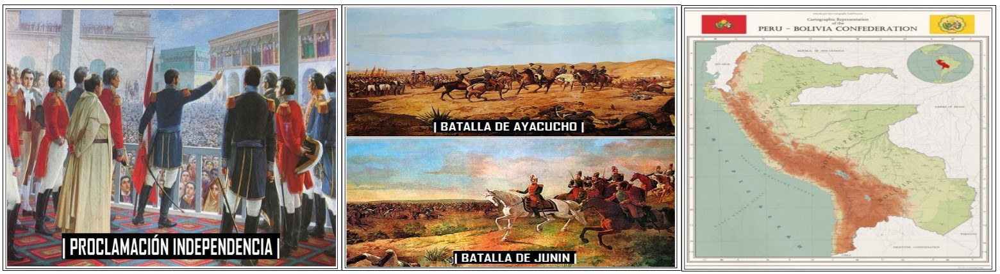
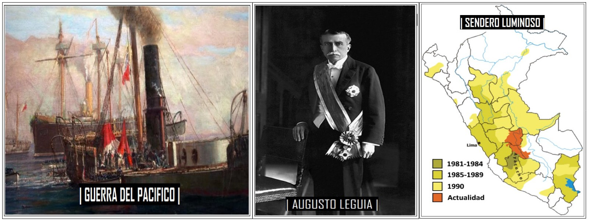
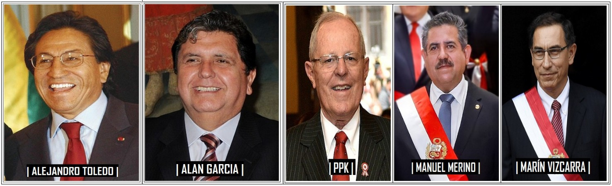

|Época Prehispanica (hasta 1532)|

|Conquista y Virreinato del Perú (1532 - 1821)|

|Independencia y República Temprana (1821 - 1845)|

|Guerras, Crisis y Modernización (1845 - 2000)|

|Democracia y Desafios actuales (2001 - ....)|
